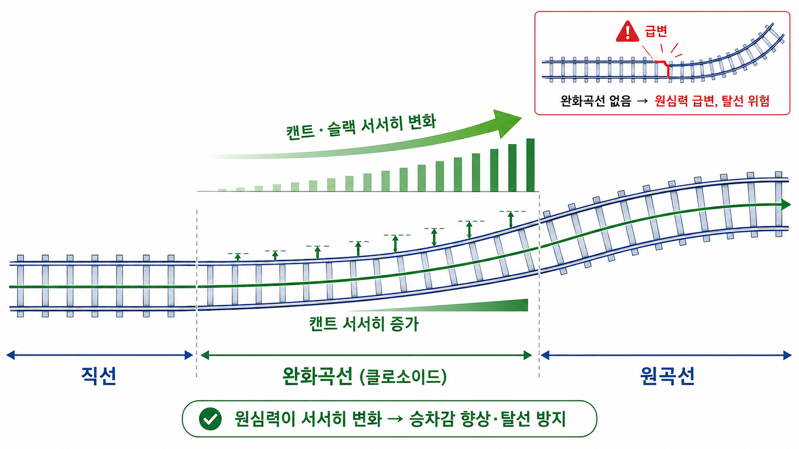
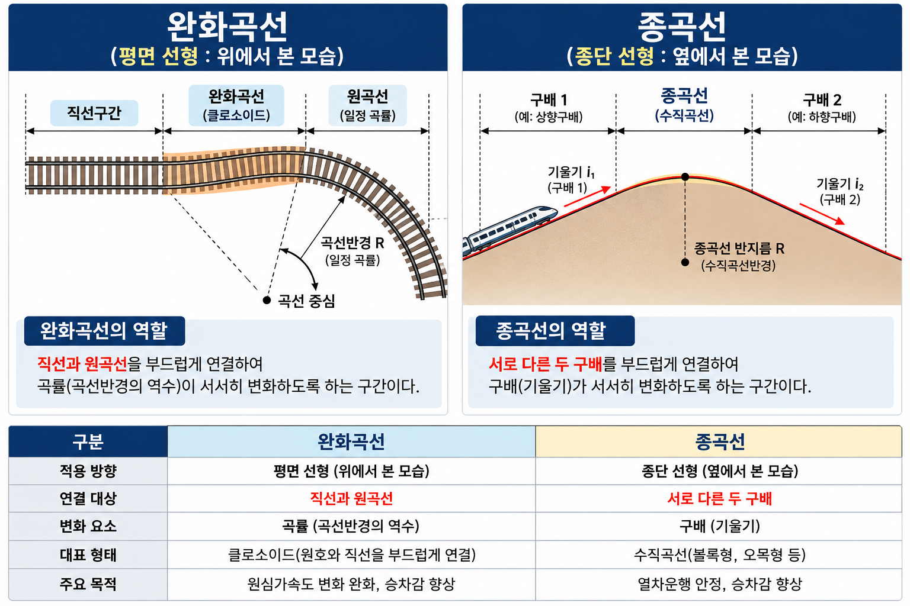

| 용어 | 정의 (SOURCE 20) |
|---|---|
| 완화곡선 | 직선과 원곡선 사이에 삽입하는 곡선. 곡률·캔트·슬랙을 점진적으로 변화시켜 원심력의 급변을 완화한다. 대표 형식: 클로소이드, 3차포물선. |
| 클로소이드 | 진행 거리에 따라 곡률이 점진적으로 변하는 곡선. 직선과 원곡선 사이 연결에 사용되는 대표적 완화곡선 형식. |
| 체감(Transition) | 캔트·슬랙을 직선과 곡선 사이에서 점차 변화시키는 구간. 완화곡선 구간 내에서 함께 이루어진다. |
| 종곡선 | 종단 선형에서 서로 다른 구배(기울기)를 부드럽게 연결하는 곡선. 평면 선형의 완화곡선과 다름. |
열차가 곡선부를 통과할 때는 직선 주행과 달리 횡방향 힘과 차량의 편기·기울기가 발생한다. 이에 대응하기 위해 다음 요소를 함께 고려한다.
곡선반경 / 열차속도 / 원심력 / 캔트 / 슬랙 / 완화곡선 / 건축한계 확대
캔트·슬랙의 상세 내용은 UNIT 03-02에서 다룬다. 이 UNIT은 곡선과 완화곡선의 구조적 역할에 집중한다.
직선에서는 곡률이 0이고, 원곡선에서는 일정한 곡률을 가진다.
직선에서 곧바로 원곡선으로 진입하면 곡률과 원심력의 변화가 갑자기 발생한다. 이를 완만하게 연결하기 위해 직선과 원곡선 사이에 완화곡선을 설치한다.
완화곡선의 목적
① 원심력의 급격한 변화 완화
② 캔트를 점진적으로 증가·감소
③ 슬랙을 점진적으로 변화
④ 승차감과 주행안정성 향상

클로소이드(Clothoid)는 곡선 진행에 따라 곡률이 점진적으로 변하는 곡선으로, 직선과 원곡선 사이 연결에 가장 적합하다.
프로젝트 용어정의: 완화곡선 = 직선과 원곡선 사이에 삽입하는 곡선(클로소이드, 3차포물선)
※ 상세 수학식은 현재 프로젝트 SOURCE에 명확히 제시되지 않아 기술하지 않는다.
체감이란 캔트·슬랙을 직선과 곡선 사이에서 점차 변화시키는 구간을 말한다.
완화곡선은 단순히 평면상 곡률만 바꾸는 것이 아니라, 실제 선로에서는 캔트와 슬랙의 점진적 변화와 연결해서 이해해야 한다. 체감 구간은 완화곡선 구간 내에서 함께 이루어진다.
| 구분 | 완화곡선 | 종곡선 |
|---|---|---|
| 적용 선형 | 평면 선형 | 종단 선형 |
| 목적 | 직선과 원곡선을 부드럽게 연결 | 서로 다른 구배(기울기)를 부드럽게 연결 |
| 핵심 변화 | 곡률 (수평면) | 기울기 (수직면) |
| 관련 요소 | 캔트·슬랙·원심력 | 구배·종단선형 |

고속선에서는 큰 곡선반경이 필요하다. 일반적으로:
① 곡선반경이 작을수록 곡선이 급해짐
② 같은 속도라면 원심력 영향이 커짐
③ 더 큰 캔트 또는 속도제한이 필요할 수 있음
※ 정량식은 현재 UNIT SOURCE 범위에서 LOCK된 공식이 없어 기술하지 않는다. (→ UNIT 03-02 참조)
Q1 정답 ③
③은 종곡선의 역할(서로 다른 구배를 부드럽게 연결)이다. 완화곡선은 평면 선형에서 직선과 원곡선을 연결하며, ①②④(원심력 완화·캔트 점진 변화·슬랙 점진 변화)가 모두 완화곡선의 목적이다.
Q2 정답 ②
완화곡선의 대표 형식은 클로소이드와 3차포물선이다(SOURCE 20). 클로소이드는 진행 거리에 따라 곡률이 점진적으로 변하는 특성이 있어 직선과 원곡선 사이 연결에 적합하다.
Q3 정답 ②
(가) O — 완화곡선은 직선과 원곡선 사이에 설치한다.
(나) X — 종곡선은 종단 선형에서 서로 다른 구배를 연결하는 것이다. 평면 선형과 무관.
(다) O — 체감은 완화곡선 구간 내에서 캔트·슬랙을 점진 변화시키는 구간이다.